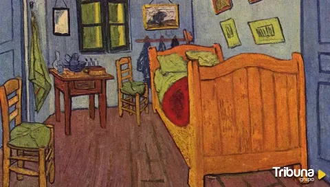

El arte es el espejo del alma humana y el registro vivo de nuestra historia. Desde las pinturas rupestres hasta las vanguardias contemporáneas, su propósito ha sido transformar la experiencia humana en algo visible, permitiéndonos comunicar emociones, cuestionar la realidad y preservar la cultura más allá del tiempo y las palabras.